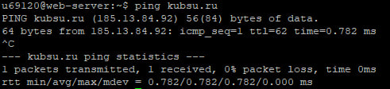
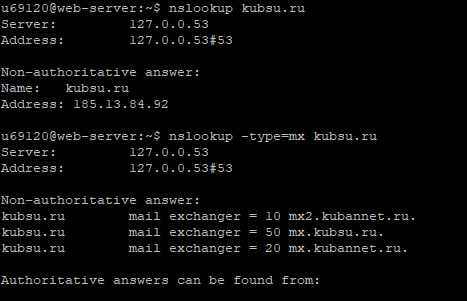
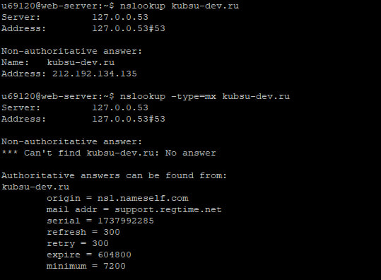
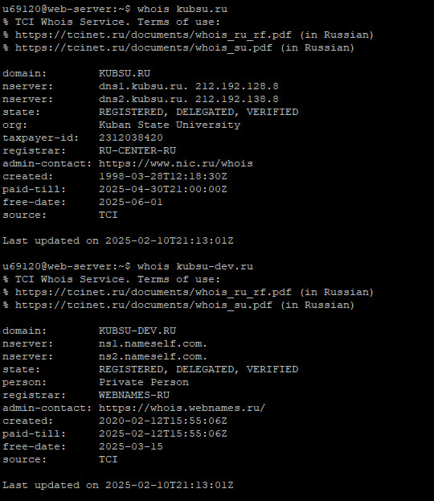

1. Используем утилиту ping, чтобы узнать IP-адрес веб-сервера kubsu.ru.

2. Используем команду nslookup и nslookup -type=mx, чтобы узнать A-запись и MX-запись соответственно домена kubsu.ru.

И домена kubsu-dev.ru

A-запись домена — это тип ресурсной записи DNS, который связывает домен с IP-адресом сервера.
MX (Mail Exchange) — это запись, которая указывает на почтовый сервер доменного имени. Это позволяет внешним почтовым серверам определять, куда отправлять электронную почту.
Примечание: при вызове MX-записи домена kubsu-dev.ru командная строка выдает "no answer", которая означает, что у домена нет электронной почты.
3. Используем команду whois, чтобы узнать дату регистрации доменов kubsu.ru и kubsu-dev.ru

Также с помощью этой команды мы можем узнать, например, последнее обновление домена и его состояние (зарегистрирован, верифицирован, делегирован).